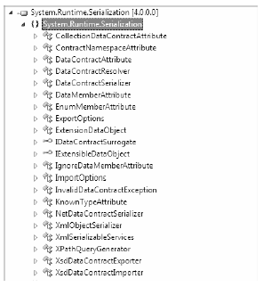

Hosts and clients communicate with each other by agreeing on the ABCs, a friendly mnemonic for remembering the core building blocks of a WCF application address, binding, and contract:
You should realize that the ABC abbreviation does not imply that a developer must define the address first, followed by binding, and ending with the contract. In many cases, a WCF developer begins by defining a contract for the service, followed by establishing an address and bindings (any order will do, as long as each aspect is accounted for). Before you build your first WCF application, you will take a more detailed walk through of the ABCs.
Understanding the notion of a contract is the key to building a WCF service. While not mandatory, the vast majority of your WCF applications will begin by defining a set of .NET interface types that are used to represent the set of members a given WCF service will support. Specifically, interfaces that represent a WCF contract are called service contracts. The classes (or structures) that implement them are called service types.
WCF service contracts are adorned with various attributes, the most common of which are defined in the System.ServiceModel namespace. When the members of a service contract (the methods in the interface) contain only simple data types (e.g., numerical data, Booleans, and string data), you can build a complete WCF service using nothing more than the [ServiceContract] and [OperationContract] attributes.
However, if your members expose custom types, you will need to use types in the System.Runtime.Serialization namespace (see Figure 25-5) of the System.Runtime.Serialization.dll assembly. Here you will find additional attributes (e.g., [DataMember] and [DataContract]) to fine-tune the process of defining how your composite types are serialized to and from XML when they are passed to and from service operations.
Strictly speaking, you are not required to use CLR interfaces to define a WCF contract. Many of these same attributes can be applied on public members of a public class (or structure). However, given the many benefits of interface-based programming (e.g., polymorphism and elegant versioning), it is safe to consider using CLR interfaces to describe a WCF contract a best practice.
Figure 25-5 System.Runtime.Serialization defines a number of attributes used when building WCF data contracts
Once you define and implement a contract (or a set of contracts) in your service library, the next logical step is to build a hosting agent for the WCF service itself. As mentioned previously, you have a variety of possible hosts to choose from, all of which must specify the bindings used by remote callers to gain access to the service type’s functionality.
Choosing a set of bindings is one area that makes WCF development quite different from .NET remoting and/or XML web service development. WCF ships with many of binding choices, each of which is tailored to a specific need. If none of the out-of-the-box bindings fits the bill, you can create your own by extending the CustomBinding type (something you will not do in this chapter). A WCF binding can specify the following characteristics:
Any supported web service protocols (if permitted by the binding), such as WSSecurity, WS-Transactions, WS-Reliability, and so on
Let’s take a look at your basic choices.
The BasicHttpBinding, WSHttpBinding, WSDualHttpBinding, and WSFederationHttpBinding options are geared toward exposing contract types through XML web service protocols. If you require the furthest reach possible for your service (e.g., multiple operating systems and multiple programming architectures), you want to focus on these bindings because all of these binding types encode data based on XML representation and use HTTP on the wire.
Table 25-3 shows note how you can represent a WCF binding in code (using class types within the System.ServiceModel namespace) or as XML attributes defined within *.config files.
Table 25-3. The HTTP-Centric WCF Bindings
| Binding Class | Binding Element | Meaning in Life |
|---|---|---|
| BasicHttpBinding | <basicHttpBinding> | You use this to build a WS-Basic Profile– conformant (WS-I Basic Profile 1.1) WCF service. This binding uses HTTP as the transport and Text/XML as the default message encoding |
| WSHttpBinding | <wsHttpBinding> | This is similar to BasicHttpBinding, but provides more web service features. This binding adds support for transactions, reliable messaging, and WS-Addressing. |
| WSDualHttpBinding | <wsDualHttpBinding> | This is similar to WSHttpBinding, but intended for use with duplex contracts (e.g., the service and client can send messages back and forth). This binding supports only SOAP security and requires reliable messaging. |
| WSFederationHttpBinding | <wsFederationHttpBinding> | This is a secure and interoperable binding that supports the WSFederation protocol, enabling organizations that are in a federation to authenticate and authorize users efficiently. |
As its name suggests, BasicHttpBinding is the simplest of all web service–centric protocols. Specifically, this binding ensures that your WCF service conforms to a specification named WS-I Basic Profile 1.1 (defined by WS-I). The main reason to use this binding is for maintaining backward compatibility with applications that were previously built to communicate with ASP.NET web services (which have been part of the .NET libraries since version 1.0).
The WSHttpBinding protocol not only incorporates support for a subset of the WS-* specification (transactions, security, and reliable sessions), but also supports the ability to handle binary data encoding using Message Transmission Optimization Mechanism (MTOM).
The main benefit of WSDualHttpBinding is that it adds the ability to allow the caller and sender to communicate using duplex messaging, which is a fancy way of saying they can engage in a two-way conversation. When selecting WSDualHttpBinding, you can hook into the WCF publish/subscribe event model.
Finally, WSFederationHttpBinding is the web service–based protocol you might wish to consider when security among a group of organizations is of the utmost importance. This binding supports the WS-Trust, WS-Security, and WS-SecureConversation specifications, which are represented by the WCF CardSpace APIs.
If you build a distributed application involving machines that are configured with the .NET 4.0 libraries (in other words, all machines are running the Windows operating system), you can gain performance benefits by bypassing web service bindings and opting for a TCP binding, which ensures that all data is encoded in a compact binary format, rather than XML. Again, when you use the bindings shown in Table 25-4, the client and host must be .NET applications.
Table 25-4. The TCP-Centric WCF Bindings
| Binding Class | Binding Element | Meaning in Life |
|---|---|---|
| NetNamedPipeBinding | <netNamedPipeBinding> | Serves as a secure, reliable, optimized binding for on-the-same-machine communication between .NET applications. |
| NetPeerTcpBinding | <netPeerTcpBinding> | Provides a secure binding for P2P network applications. |
| NetTcpBinding | <netTcpBinding> | Serves as a secure and optimized binding suitable for cross-machine communication between .NET applications. |
The NetTcpBinding class uses TCP to move binary data between the client and WCF service. As mentioned previously, this will result in higher performance than the web service protocols, but limits you to an in-house Windows solution. On the plus side, NetTcpBinding supports transactions, reliable sessions, and secure communications.
Like NetTcpBinding, NetNamedPipeBinding supports transactions, reliable sessions, and secure communications; however, it has no ability to make cross-machine calls. If you want to find the fastest way to push data between WCF applications on the same machine (e.g., cross-application domain communications), NetNamedPipeBinding is the binding choice of champions. For more information on NetPeerTcpBinding, consult the .NET Framework 4.0 documentation for details regarding P2P networking.
Finally, the NetMsmqBinding and MsmqIntegrationBinding bindings are of immediate interest if you want to integrate with a Microsoft MSMQ server. This chapter will not examine the details of using MSMQ bindings, but Table 25-5 documents the basic role of each.
Table 25-5. The MSMQ-Centric WCF Bindings
| Binding Class | Binding Element | Meaning in Life |
|---|---|---|
| MsmqIntegrationBinding | <msmqIntegrationBinding> | You can use this binding to enable WCF applications to send and receive messages to and from existing MSMQ applications that use COM, native C++, or the types defined in the System. Messaging namespace. |
| NetMsmqBinding | <netMsmqBinding> | You can use this queued binding for crossmachine communication between .NET applications. This is the preferred approach among the MSMQ-centric bindings. |
Once you establish the contracts and bindings, the final piece of the puzzle is to specify an address for the WCF service. This is important because remote callers will be unable to communicate with the remote types if they cannot locate them! Like most aspects of WCF, an address can be hard-coded in an assembly (using the System.Uri type) or offloaded to a *.config file.
In either case, the exact format of the WCF address will differ based on your choice of binding (HTTP based, named pipes, TCP based, or MSMQ based). From a high level, WCF addresses can specify the following bits of information:
This information can be represented by the following generalized template (the Port value is optional because some bindings don’t use them):
scheme://<MachineName>[:Port]/Path
When you use a web service–based binding (e.g., basicHttpBinding, wsHttpBinding, wsDualHttpBinding, or wsFederationHttpBinding), the address breaks down like this (recall that HTTPbased protocols default to port 80 if you do not specify a port number):
http://localhost:8080/MyWCFService
If you use TCP-centric bindings (e.g., NetTcpBinding or NetPeerTcpBinding), the URI takes the following format:
net.tcp://localhost:8080/MyWCFService
The MSMQ-centric bindings (NetMsmqBinding and MsmqIntegrationBinding) are unique in their URI format because MSMQ can use public or private queues (which are available only on the local machine), and port numbers have no meaning in an MSMQ-centric URI. Consider the following URI, which describes a private queue named MyPrivateQ:
net.msmq://localhost/private$/MyPrivateQ
Last but not least, the address format used for the named-pipe binding, NetNamedPipeBinding, breaks down like this (recall that named pipes allow for interprocess communication for applications on the same physical machine):
net.pipe://localhost/MyWCFService
While a single WCF service might expose only a single address (based on a single binding), it is possible to configure a collection of unique addresses (with different bindings). You can do this in a *.config file by defining multiple <endpoint7gt; elements. Here, you can specify any number of ABCs for the same service. This approach can be helpful when you want to allow callers to select which protocol they would like to use when communicating with the service.